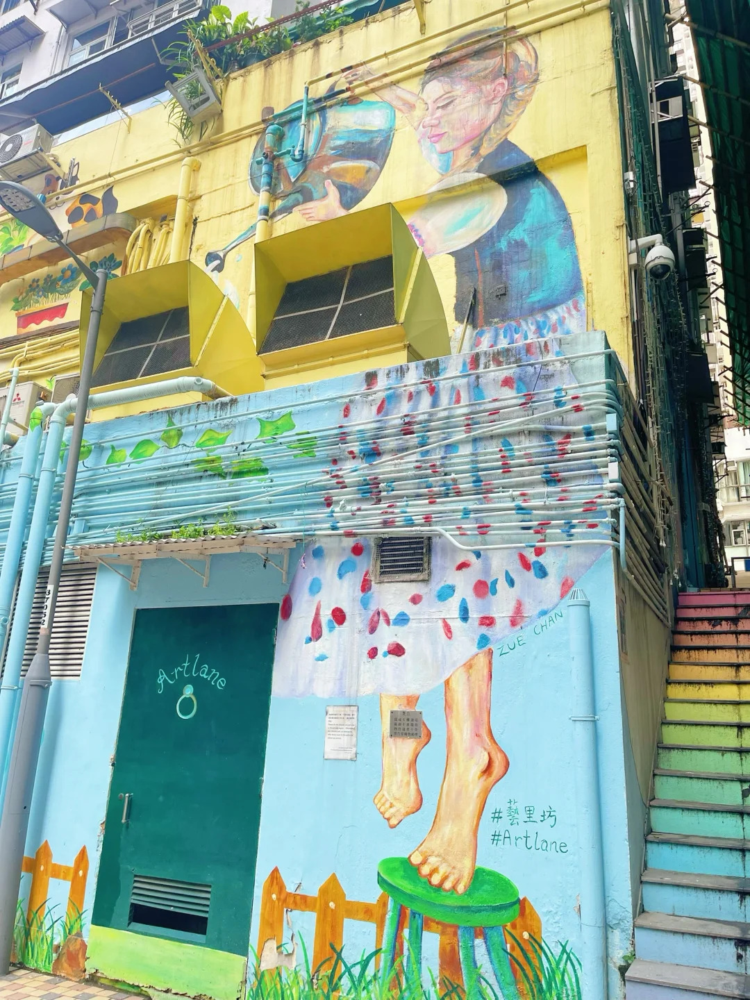
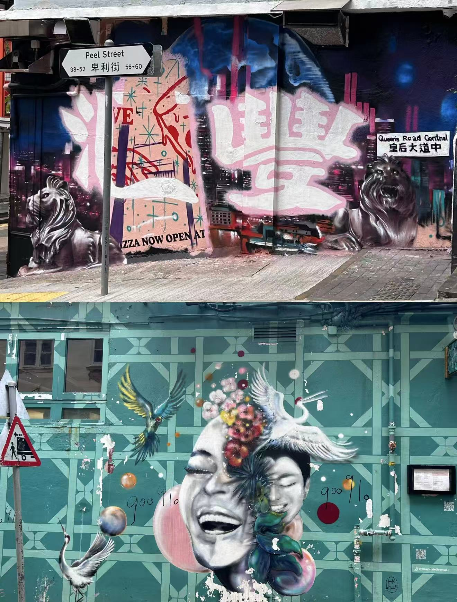
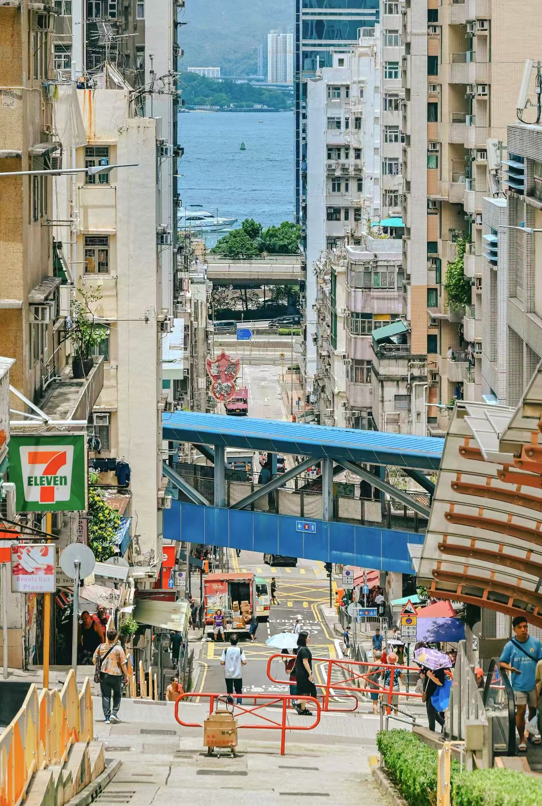
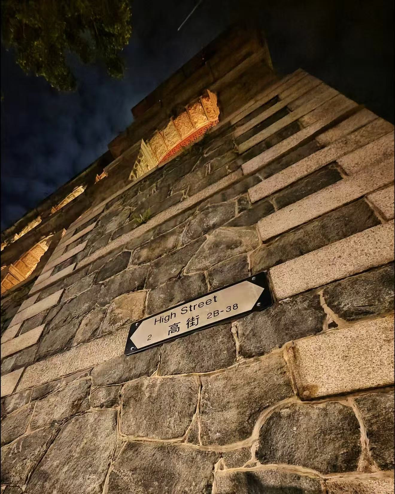

Artistic Landmark
Sai Ying Pun's graffiti spans across over a dozen buildings, forming a concentrated art area. Among them, "ARTLANE" is a graffiti district composed of Centre Street, Ki Ling Lane, and Shek Tong Tsui, gathering works by local and international artists.
Diverse Styles: The graffiti styles here vary greatly, from colorful, playful murals to thought-provoking works reflecting social issues.
For example, one artist created a large-scale mural themed around a traditional Hong Kong herbal tea shop, cleverly blending tradition with modernity.
Dynamic Updates: Graffiti culture is highly time-sensitive. Some works are created during art festivals for a limited time and may later be covered by new graffiti, adding freshness and unpredictability to exploration.




